Invitación opcional
Apareció sobre Cielo después del onboarding, sin bloquear el menú. La cuenta continuó sin datos natales sensibles.
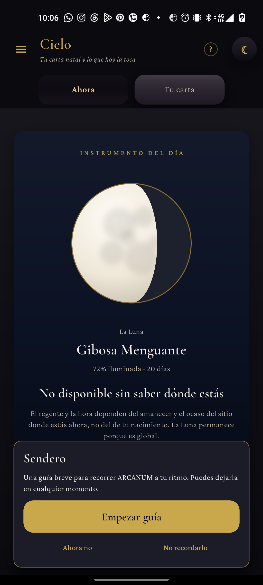
Recorrido real en Android 12 con una cuenta nueva sin datos natales sensibles. Capturas del aparato, no de tests sintéticos.
Ordenado por impacto: economía primero; después navegación y contexto. Ningún hallazgo depende de una captura de Flutter test.
El cajón tenía 0 Fragmentos antes de terminar Primer umbral. La tarjeta final anunció un Fragmento. Después, cajón y pantalla de Fragmentos mostraron 3; esta última afirma «3 Fragmento por cada lección».
Causa verificada: Railway tenía activo 2a76e1e, cuyo FragmentService.TUTORIAL_REWARD vale 3. La rama de la app define 1. No se completaron más lecciones para no acuñar más Fragmentos bajo la regla vieja.
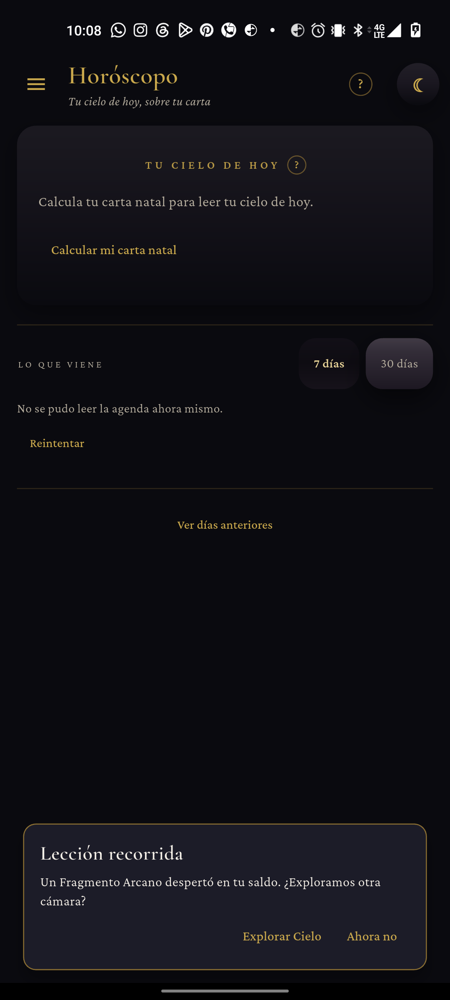
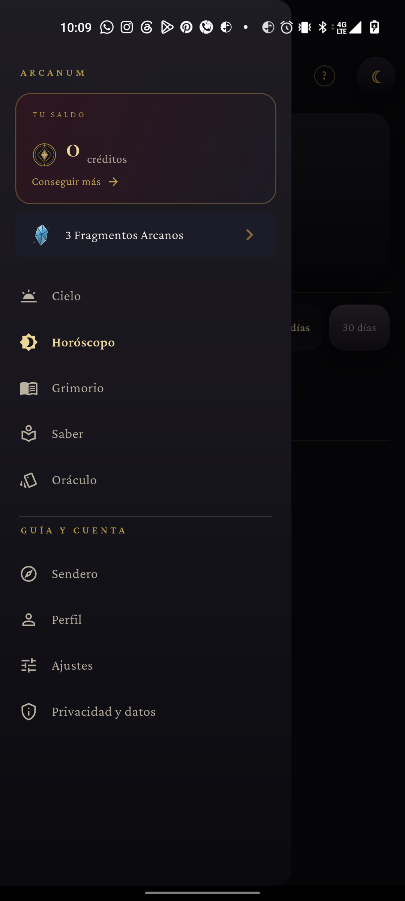
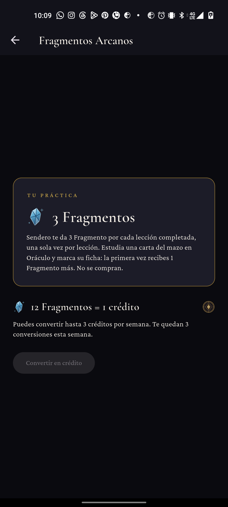
En el paso 2/3 de Primer umbral, el contorno dorado queda sobre Cielo y apenas alcanza Horóscopo. Esperar a que termine la transición no lo corrige. Tocar la fila real de Horóscopo sí avanza; el problema es visual y guía hacia el lugar incorrecto.
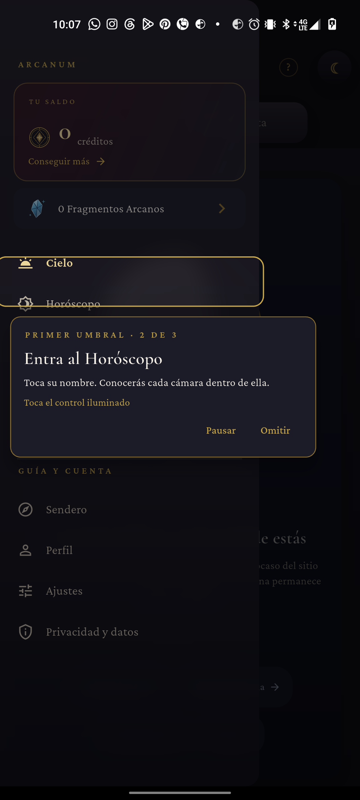
La cuenta eligió continuar sin datos sensibles. Horóscopo pide calcular la carta natal y no permite abrir lectura. Sendero, encima, dice «Puedes abrir tu lectura si quieres». «Terminar sin gastar» funciona, pero el texto debe reconocer ese estado vacío; no debe empujar a entregar datos natales.
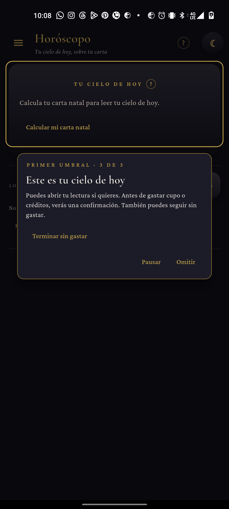
Al salir de Cielo hacia Saber, la tarjeta conserva el recorrido, pero solo ofrece «Explorar Saber» y «Pausar». Falta «Volver a Cielo», una de las dos opciones prometidas para este estado. La navegación libre por el menú sí permite volver manualmente.
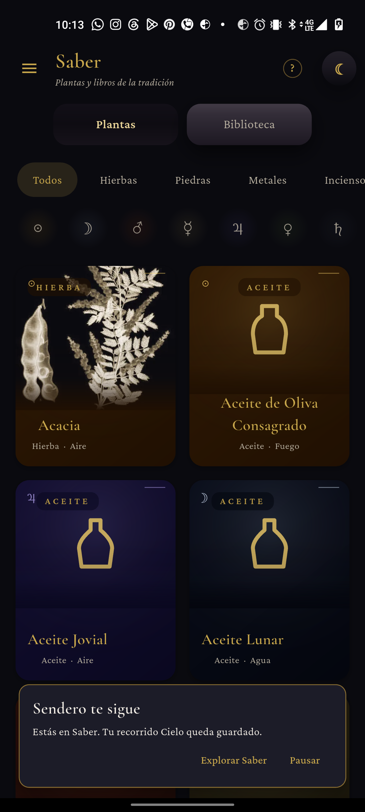
El marco ornamental de la tarjeta «A tu lado» solapa rótulo, cifra y párrafo. Ya estaba en el QA del 30 de septiembre y sigue en la build probada. El velo de los pasos también oscurece mucho la app; la tarjeta 3/3 ocupa el centro con bastante texto.
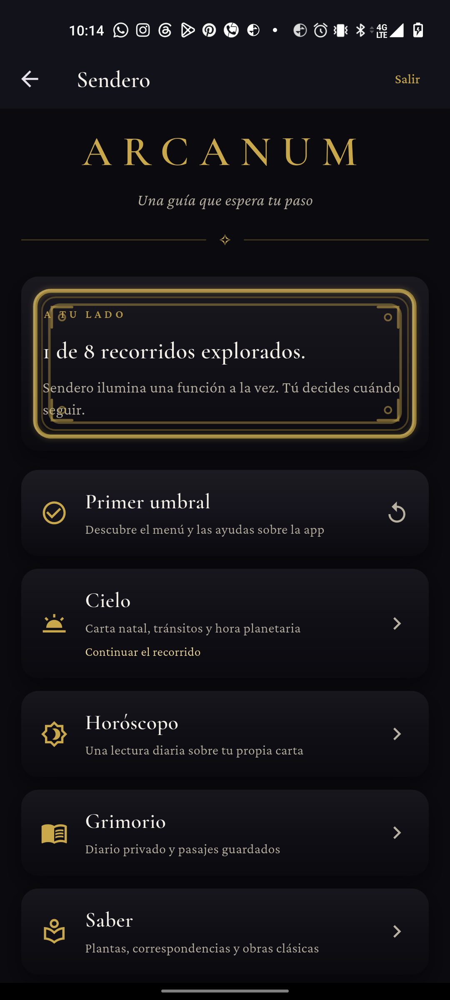
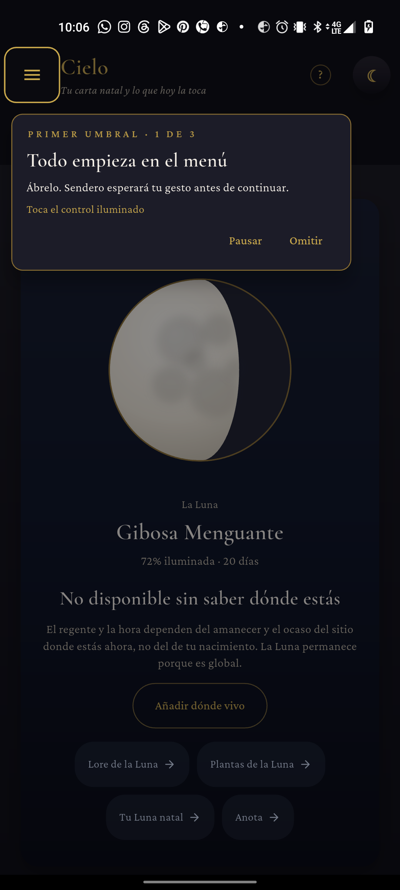
Apareció sobre Cielo después del onboarding, sin bloquear el menú. La cuenta continuó sin datos natales sensibles.

«Sendero en Cielo» apareció sin velo; al salir y volver ya no se repitió. Horóscopo mostró su propia pista después.
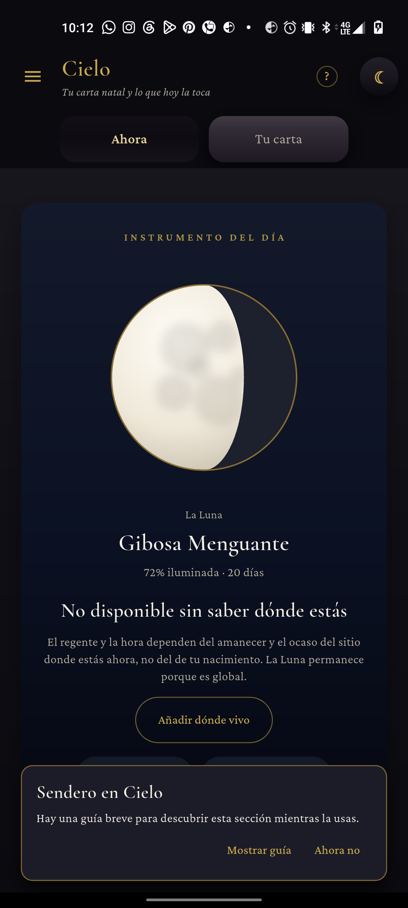
Se abrió el menú durante Cielo, se entró a Saber, se pausó y se volvió. El índice ofreció continuar y reapareció Cielo · 2 de 2. La sugerencia de próxima lección tampoco abrió Cielo sola.
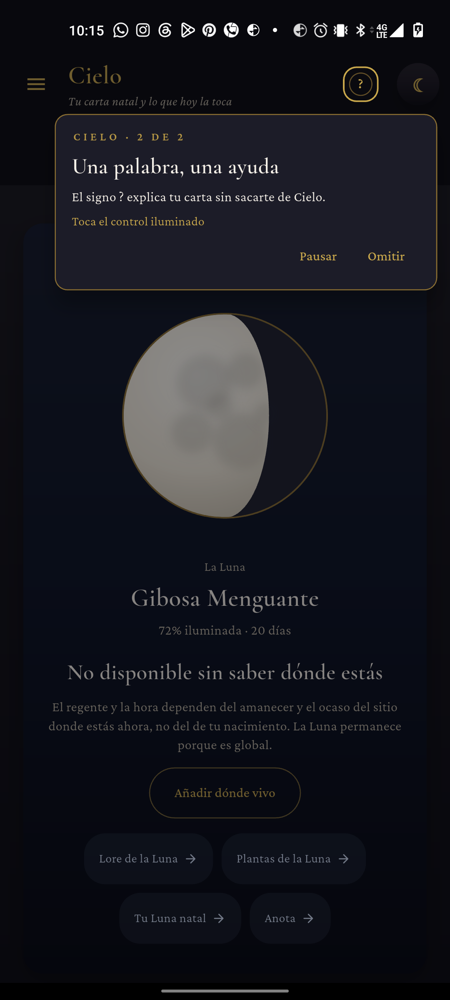
Probado: registro de cuenta genérica, rechazo de datos sensibles, invitación, tres pasos de orientación, cajón, Horóscopo vacío, finalización sin gasto, saldo y regla de Fragmentos, pista de Cielo y Horóscopo, desvío a Saber, pausa, índice y retoma. Cero créditos en todo momento.
No probado: lectura real ni su confirmación de gasto, canje, segunda recompensa, persistencia entre dispositivos, lector de pantalla, texto grande, movimiento reducido y todos los recorridos. El fallo económico impidió completar más lecciones sin alterar más el saldo.